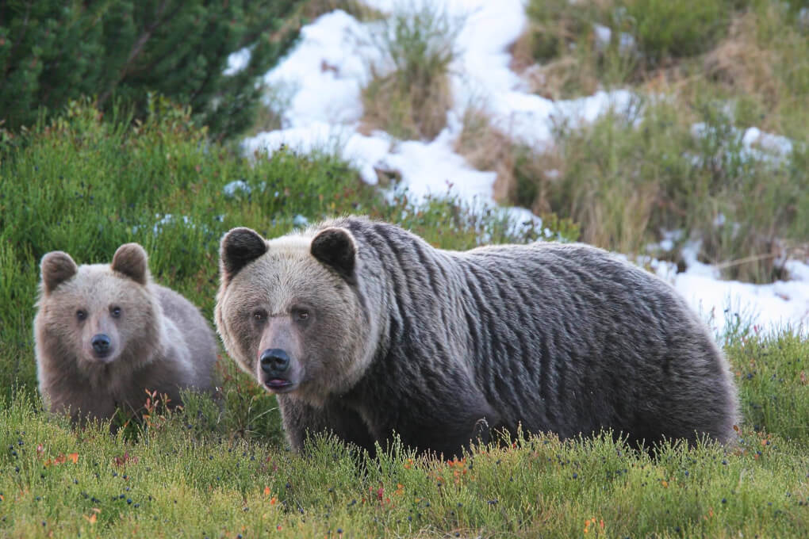
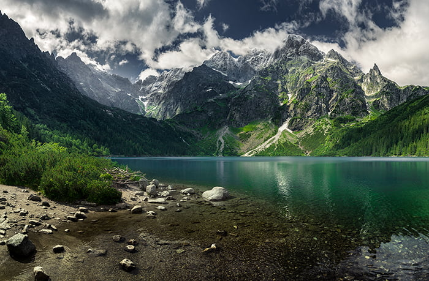

Blog tatrzański


Odkryj Piękno Gór
W Tatrach żyje kilkanaście niedźwiedzi. Waga tego zwierzęcia waha się od 95 do 390 kg w zależności od płci. Największy ciężar niedźwiedzie osiągają przed zimą, gdy gromadzą zapasy tłuszczu na tę porę roku - zapadają wówczas w sen zimowy, który trwa średnio od grudnia do kwietnia- informuje Portal Tatrzański. Co zrobić gdy spotka się niedźwiedzia? Jak zachować się podczas spotkania z niedźwiedziem? Tatrzański Park Narodowy instruuje, że przede wszystkim nie wolno w Tatrach schodzić z wyznaczonych szlaków i przebywać w górach po zmroku. Nie powinno się wędrować bezgłośnie i nie wolno podążać tropem niedźwiedzia. Co istotne, na teren TPN nie można wprowadzać psów. Z psem (na smyczy) można wyruszyć jedynie na Drogę pod Reglami i do Doliny Chochołowskiej. Psy mogą sprowokować drapieżniki żyjące w Tatrach.
Tatry, najwyższe pasmo górskie w Polsce, to prawdziwy raj dla miłośników przyrody, turystów i entuzjastów aktywnego wypoczynku. Leżące na południu kraju, stanowią część Karpat Zachodnich i przyciągają rocznie tysiące turystów z całego świata. W Tatrach każdy znajdzie coś dla siebie - od malowniczych dolin, przez wymagające szlaki, po zapierające dech w piersiach panoramy. Najpiękniejsze Szlaki Tatrzańskie Tatry oferują mnóstwo różnorodnych szlaków turystycznych, dostosowanych do różnych poziomów zaawansowania. Oto kilka z nich, które koniecznie trzeba zobaczyć: Dolina Chochołowska: Najdłuższa dolina w polskich Tatrach, idealna na rodzinne wycieczki. Wiosną zachwyca krokusami, a jesienią kolorami liści. Dolina Kościeliska: Popularna trasa, która prowadzi do malowniczych wąwozów i jaskiń, takich jak Jaskinia Mroźna czy Jaskinia Raptawicka. Morskie Oko: Jeden z najbardziej znanych szlaków, prowadzący do najpiękniejszego tatrzańskiego jeziora. Widok na Morskie Oko z otaczającymi go szczytami jest niezapomniany. Orla Perć: Szlak dla doświadczonych turystów, uznawany za jeden z najtrudniejszych w Tatrach. Wymaga dobrej kondycji i braku lęku wysokości. Przyroda Tatr Tatry są domem dla wielu unikalnych gatunków roślin i zwierząt. Wśród najcenniejszych przedstawicieli tatrzańskiej fauny znajdziemy kozice, świstaki oraz orły przednie. Flora Tatr również jest niezwykle różnorodna, z wieloma gatunkami endemicznymi, które nie występują nigdzie indziej na świecie. Tatrzański Park Narodowy Większość polskiej części Tatr objęta jest ochroną Tatrzańskiego Parku Narodowego (TPN). Park ten został utworzony w 1954 roku i ma na celu ochronę unikalnej przyrody Tatr oraz promocję zrównoważonej turystyki. TPN dba o utrzymanie szlaków turystycznych, edukację ekologiczną oraz badania naukowe. Zakopane - Stolica Polskich Tatr Podstawą wyprawy w Tatry często jest Zakopane, urokliwe miasteczko położone u podnóża gór. Zakopane oferuje liczne atrakcje, takie jak Krupówki - główny deptak pełen restauracji i sklepów, Wielka Krokiew - skocznia narciarska, oraz liczne muzea i galerie sztuki. Aktywny Wypoczynek przez Cały Rok Tatry to nie tylko turystyka piesza. W zimie stają się rajem dla narciarzy i snowboardzistów, oferując wiele tras narciarskich i ośrodków sportów zimowych. Latem można spróbować wspinaczki, jazdy na rowerze czy nawet paraglidingu. Podsumowanie Polskie Tatry to miejsce, które zachwyca i inspiruje. Niezależnie od pory roku, każdy znajdzie tu coś dla siebie. Piękne krajobrazy, czyste powietrze i bliskość natury sprawiają, że Tatry są idealnym miejscem na odpoczynek i aktywny wypoczynek. Jeśli jeszcze nie miałeś okazji odwiedzić tego wyjątkowego zakątka Polski, koniecznie wpisz Tatry na swoją listę podróżniczych celów!
